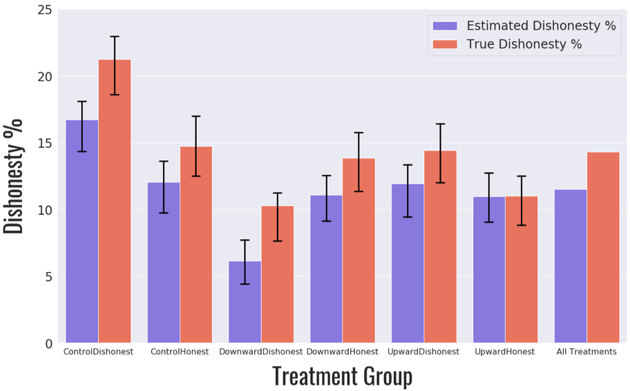
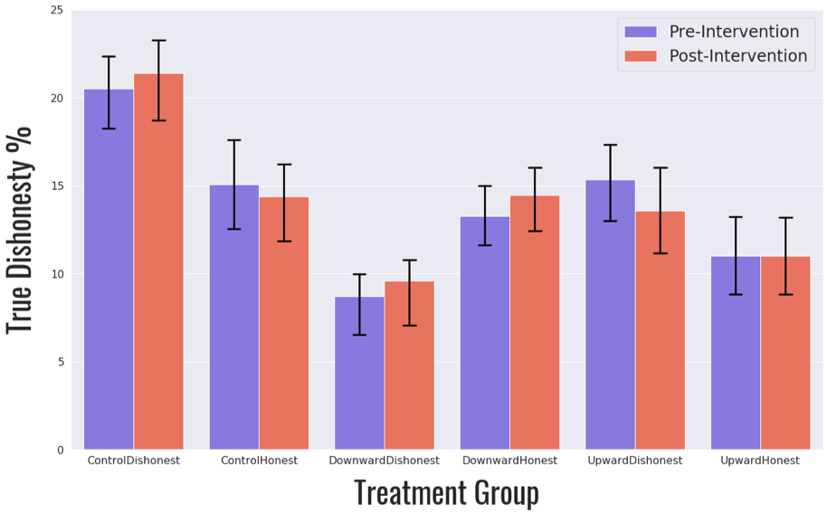

Most of the existing literature using this iteration of the ‘mind game’ paradigm relies on utilizing the difference between the expected number of matches per period (given a baseline probability of 16.7% of a match) and the number of matches actually reported by the participant to estimate the degree of dishonesty within or between treatments — a measure we have chosen to call the ‘estimated dishonesty percentage’ (Jiang, 2013). Instead, our experimental design allowed for total accuracy in the calculation of dishonest behavior by logging the actual result of each individual roll in all twenty rounds of the experiment through the Qualtrics platform. This offered an opportunity to measure and utilize a participant’s ‘true’ dishonesty percentage as the dependent variable examined throughout our study. We’ve defined the true dishonesty percentage as the ratio of observed dishonest decisions (‘lies’) compared to the total number of opportunities to be dishonest in either period (or both). For example, if a participant rolled three 6’s and seven non-6’s in one ten-round period, they had seven total dishonest opportunities. If they reported a total of five matches (rolls that resulted in a 6) throughout the period, they have therefore lied in two of their seven opportunities meaning their true dishonesty is 2/7 or 28.6%. This should theoretically control for any potential variance in our data due to the number of 6’s each subject happens to roll (though we later confirm this through our regression framework as well). The differences between the estimated and true dishonesty percentages for each individual treatment and across all observations are shown below (Figure 1). Notably, we find our mean true dishonesty percentage (14.3%) to be significantly higher than our mean estimated dishonesty percentage (11.5%) when looked at across all 205 observations (p=0.00).  Our results were then analyzed according to the methodologies described in our pre-registration, using true dishonesty as our dependent variable, finding strong evidence for a null result across all analyses. We first evaluated differences within each arm of the experiment by calculating each subject’s true dishonesty percentage both before and after our intervention, treating each period as a single observation ( Figure 2). Using a basic Wilcoxon Signed Rank Test to conduct pairwise mean comparisons between periods for each, we consistently find no significant differences resulting from any of our individual treatment interventions, with our lowest p-value being 0.180 (DownwardHonest). Though underpowered, this null result is consistent with the findings of Dimant et al who similarly failed to find significant differences in average reporting behavior across a range of norm interventions (Dimant et al. 2019). 
We next turned to our between treatment analysis, seeking to find evidence for our first hypothesis by utilizing our 3x2 design to compare the effect of static versus trending normative interventions. Again using a Wilcoxon Signed Rank Test to conduct pairwise mean comparisons between periods for each, we consistently find no significant differences resulting from any of our individual treatment interventions, with our lowest p-value being 0.176 (Upward Trending). This null result offers no support for our first hypothesis, with both trending interventions failing to make a significant difference on participant behavior (Figure 3).
Figure 3. Treatment Results: Trending vs Static Interventions
We repeated this analysis to test our second hypothesis, comparing the pooled results of our interventions for both the ‘Honest’ and ‘Dishonest’ treatment pairs. Again, we found no significant results indicating a change in behavior following either set of interventions with our lowest p-value being .285 (Honest Framing). This fails to support our hypothesis that social norm interventions with an upward trend would have more impact than downward trends.
FFigure 4. Treatment Results: Framing